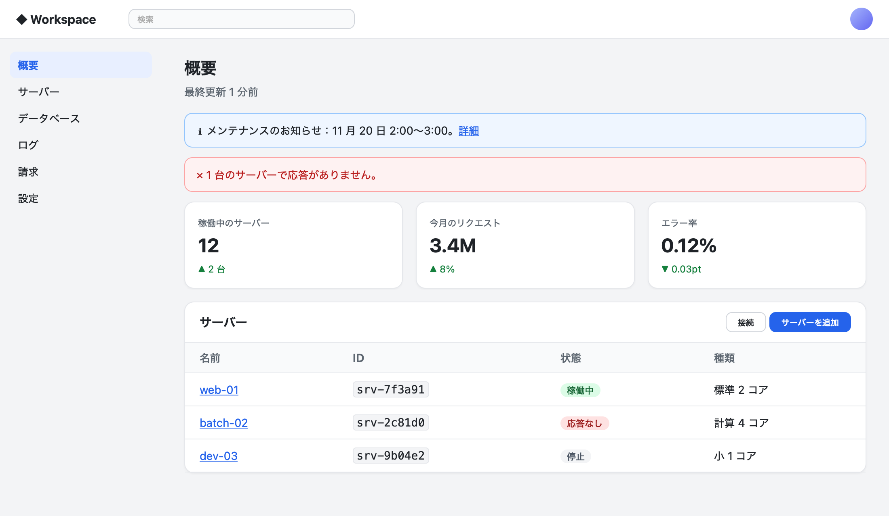
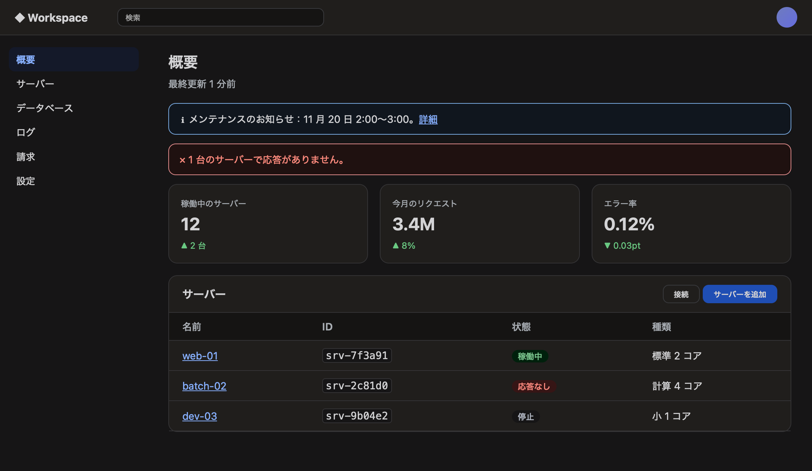

明るいサイトを、Mac らしいダークモードに。
色を反転させずに、macOS のダークモードと同じ色の段階へ置き換えます。
夜、明かりを落とした部屋で管理画面やドキュメントを見ても、まぶしくありません。
- 読むのは色の指定（CSS）だけ
- 外部へ送信なし
- アカウント登録なし
- 使うサイトだけに絞れる


反転ではなく、置き換え。
色を一つずつ「どんな役割の色か」で見分けて、macOS のダークモードの色へ置き換えます。
面の奥行きを保つ
白いカードはウインドウの地の色に、灰色のページの地は一段奥に、灰色の部品は一段手前に。明るいサイトの重なりが、暗い画面でもそのまま分かります。
色味を残す
青いリンク、赤いエラー、緑のステータスは、色相を保ったまま暗い面で読める明るさへ。反転のように色が別物になりません。
読みやすさを確かめた配色
本文・補足の文字やボタンの文字は、WCAG 2.2 AA（4.5:1）以上のコントラストになるよう調整しています。
写真は反転しない
写真や動画は元の色のまま、明るさだけを少し落とします。落とす量は変えられます。
もともと暗いサイトはそのまま
ダークモードを持つサイトは自動で見分けて、手を加えません。サイトごとに「常にダーク」「オフ」も選べます。
夜だけダークに
「19:00〜7:00」のように時間帯を決めると、その間だけダーク表示にします。時刻が来ると、開いているページも切り替わります。
ツールバーの月のアイコンから。
変更はすぐに開いているページへ反映されます。
- このサイト自動（もともと暗いサイトはそのまま）／常にダーク／オフ
- ダークにする時間帯いつでも／時間帯を指定（日をまたいでも可）
- テーマGraphite（macOS 標準の灰）／Midnight（青みのある濃紺）／Obsidian（より深い黒）
- 文字の明るさ・あたたかさ・画像の明るさ暗い部屋では、文字を少し暗く、あたたかさを少し上げると目が楽です

読むもの・送らないもの。
Safari の「機能拡張」の画面には「Web ページの内容を読み取り・変更できる」という注意が表示されます。色を置き換えるにはこの権限が必要だからです。Nocturne が実際に行うことは、次のとおりです。
- 読むのはページの色の指定（CSS）だけスタイルシートと、要素に書かれた色を読んで、暗い配色に置き換えます。ページの文章や、フォームに入力した内容を読んだり保存したりはしません。
- 外部へは何も送りません閲覧履歴・ページの内容・設定を、開発者を含むどこにも送りません。広告や利用状況の計測も入っていません。
- CSS を取り寄せるときも Cookie を付けませんページが別の場所から読み込んでいる CSS ファイルは、色を読むために取り寄せ直します。その際はログイン情報（Cookie）を付けず、CSS ファイル以外は受け取りません。
- 設定はこの Mac の中だけテーマや時間帯などの設定は、Safari の機能拡張用の保存領域に置かれます。アカウント登録もありません。
すべてのサイトで許可する必要はありません。Safari の設定で、Nocturne が動くサイトを選べます。許可していないサイトでは、Nocturne はページを一切読みません。
- Safari の設定 →Web サイトを開く
- 左の一覧でNocturneを選ぶ
- 使うサイトを「許可」に、右下の「その他の Web サイトを訪問時」を「拒否」または「確認」にする
気になること。
Safari に「Web ページの内容を読み取り・変更できる」と出ます。大丈夫ですか？
ページの色を置き換える機能拡張には、この権限が必ず必要です。Nocturne が読むのは色の指定（CSS）だけで、外部へは何も送りません。気になる場合は、使うサイトだけを許可することもできます。
一部の色が明るいまま残ります。
画像として描かれた背景や、サイトが特殊な方法で描いている部品は置き換えられないことがあります。また、許可するサイトを絞っている場合、CSS を別のドメインから読み込んでいるサイトでは、一部が置き換わらないことがあります。気になるサイトは、月のアイコンから「常にダーク」を試してください。
もともとダークモードがあるサイトはどうなりますか？
サイトの設定が「自動」なら、暗いサイトだと見分けてそのまま表示します。AWS マネジメントコンソールのように、サイト側でダークモードを選べる場合は、そちらを使うのがいちばんきれいです。
料金はかかりますか？
アプリ内課金や月額料金はありません。